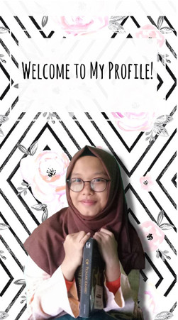

Tentang Saya
Assalamualaikum! Perkenalkan nama saya Naura Izdihar. Teman-teman di sekolah biasa memanggil saya Naura. Tapi di rumah dipanggil Rara atau Yaya. Saya anak tunggal. Saya lahir di Bogor tanggal 2 September 2001. Hingga sekarang saya berumur 16 tahun saya selalu tinggal di Bogor. Saya tinggal di Perumahan Mega Sentul Alamanda Blok O Nomor 23 Jalan Anthorium III Blok O Nomor 23. Golongan darah saya O. Saya merupakan keturunan Jawa dan Sunda. Tepatnya ayah saya berasal dari Banyumas, dan ibu saya berasal dari Bogor. Sehari-hari saya menggunakan bahasa Indonesia untuk berkomunikasi, tetapi saya menyukai bahasa Sunda. Saya juga senang mendengar orang-orang yang berbicara bahasa Sunda.
Pendidikan Terakhir
- TK Hanifah
- SDN Cijujung I
- SMPN 5 Bogor
- SMK- SMAK Bogor